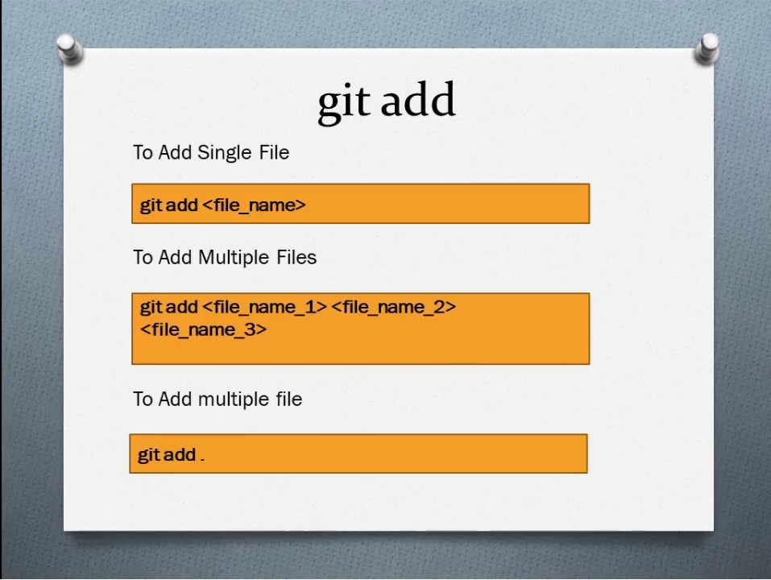

Команда git add додає нові або змінені файли у вашому робочому каталозі до робочої області Git. git add — важлива команда — без неї жоден git-комміт ніколи б нічого не зробив. Іноді git add може мати репутацію непотрібного кроку в розробці. Але насправді git add є важливим і потужним інструментом. git add дозволяє формувати історію, не змінюючи вашої роботи.
git add README.md
Під час роботи ви змінюєте та зберігаєте файл або кілька файлів. Потім, перед тим, як зафіксувати, ви повинні git add. Цей крок дозволяє вам вибрати, що ви збираєтеся зробити. Коміти мають бути логічними, атомарними одиницями змін, але не всі працюють таким чином. Можливо, ви вносите зміни у файли, які не є логічними або атомарними одиницями змін. git add дозволяє систематично формувати ваші коміти та вашу історію в будь-якому випадку.
git add [filename] вибирає цей файл і переміщує його до робочої області, позначаючи для включення в наступний коміт. Ви можете вибрати всі файли, каталог, певні файли або навіть певні частини файлу для розміщення та фіксації. Це означає, що якщо ви git add видалений файл, видалення виконується для фіксації. Мова «add», коли ви насправді «delete», може заплутати. Якщо ви думаєте або використовуєте git stage замість git add, реальність того, що відбувається, може бути більш зрозумілою. git add і git commit йдуть разом. Вони не працюють, якщо їх не використовувати разом. І обидва вони працюють найкраще, коли використовуються, думаючи про їх спільну функціональність.

git add зазвичай вписується в робочий процес у наступних кроках:
Але git add також можна використовувати так:
Найбезпечніший і найзрозуміліший спосіб використання git add — це вказати конкретний файл або каталог для розміщення. Синтаксис для цього може виглядати так: git add directory/: Поетапне виконання всіх змін у всіх файлах у каталозі під назвою directory git add README.md: Поетапне виконання всіх змін у README.md файлі